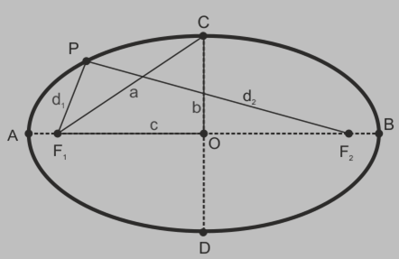
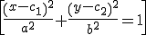
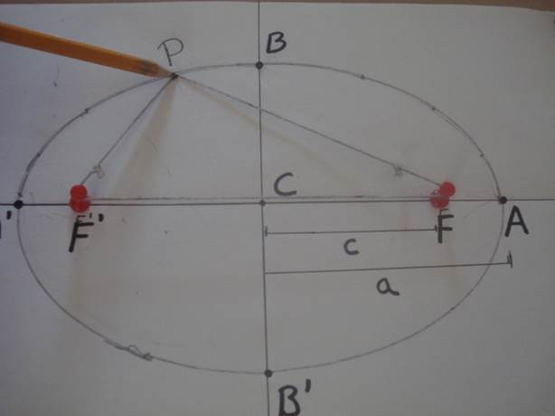
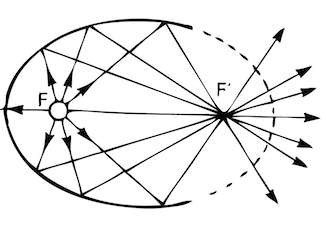
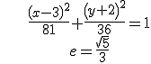

La elipse es el lugar geométrico de todos los puntos del plano cuya suma de las distancias a dos puntos fijos, llamados focos, siempre es la constante 2a.
d(P,F) + d(P,F’) = 2a

Si C(c1,c2) es el centro:

Se puede ver que a2 = b2 + c2
La excentricidad de una elipse es el cociente e = c/a. Se comprueba que 0 < e < 1, y si c es cercana a 0, la elipse se parece a una circunferencia.
Se puede dibujar una elipse del siguiente modo:

Puedes ver elipses:
–En la trayectoria de la Tierra cuando gira alrededor del Sol.
–Se comprueba que todas las líneas que salen del foco hacia la elipse se reflejan en el otro foco. Esta propiedad se usa en espejos elípticos o en Medicina, para romper piedras de riñón mediante ondas sonoras.

Ejercicio. Encuentra la ecuación y la excentricidad de la elipse de centro (3,-2) y cuyos ejes miden 12 y 18.
Solución:
